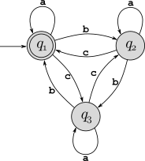

Assignments in this class are short, frequent, and low-stakes. They are designed for practice, and will be graded only for completion (a solid effort must have been made!). They will not be accepted late for any reason, and solutions and “self-grading” criteria will be covered in the class following the due date. Each student’s lowest two grades (including zeros) will be dropped. Just because these are the assigned problems that we will discuss, they are not the only practice problems you should do! Each chapter in the textbook has many problems you can use for practice and study – some have solutions in the textbook you can check against, and you can always ask me to review solutions you have written for other problems.
Note that in addition to the regular assignments listed below, graduate and honors students will complete a class project.
Browser check: If you don’t see OK in cursive/calligraphic font at the end of this line, you should click on browser issues to see how to correct the problem: \(\mathcal{O}\mathcal{K}\)
Describe each of the following sets in high-level plain English (no formulas!). For example, the set \(\{x\,|\,x=2k+1\) for \(k\geq 1\}\) is “The set of odd integers greater than or equal to 3.” Do not simply restate things as written here (in other words, do not say “The set of integers \(x\) for which \(x=2k+1\) and \(k\geq 1\)”).
The sets below are all sets of binary strings (note that \(\{0,1\}^*\) denotes the set of all binary strings), and in addition to the notation in the book (pages 13–14) we define \(c_0(x)\) to be the number of \(0\)’s in string \(x\), and \(c_1(x)\) to be the number of \(1\)’s in \(x\). For example, if \(x=\texttt{011010001}\) then \(c_0(x)=5\) and \(c_1(x)=4\).
\(\{x\,|\,x\in\{0,1\}^*\) and \(|x|=2k\) for some integer \(k\}\)
\(\{x\,|\,x\in\{0,1\}^*\) and \(c_0(x)=c_1(x)\}\)
\(\{x\,|\,x\in\{0,1\}^*\) and \(c_1(x)=2k+1\) for some integer \(k\}\)
\(\{x\,|\,x\in\{0,1\}^*\) and \(x=x^{\mathcal{R}}\}\)
Textbook, Problem 0.11
Let \(G\) be a directed graph with \(n\) vertices, and let \(v\) and \(w\) be any two nodes in the graph. Prove that if there is a path from node \(v\) to node \(w\) of length \(n\), then there is another path from \(v\) to \(w\) with length greater than \(2n\). (Hint: Think about what is appropriate in the following blank, and how that is important to this property: “Any path with \(n\) edges in an \(n\)-vertex graph must contain a _________________.” Note that this is just to get you thinking. Any property you fill in that blank with needs to be proved as part of the overall proof – you can’t just state it, even if you think it’s obvious.)
Consider the DFA \(M_1\) shown below:

What is the start state?
What is the set of accept states?
What sequence of states does the machine go through on input abbaac?
Does the machine accept string abbaac?
Does the machine accept \(\varepsilon\)?
Textbook, Exercise 1.4f
Textbook, Exercise 1.5d
Textbook, Exercise 1.16
Textbook, Exercise 1.20 – parts b and e
Textbook, Exercise 1.19b
Textbook, Exercise 1.21b
Textbook, Problem 1.46a
Consider the following context-free grammar \(G\) which generates some context-free language \(L(G)\):
\[ \begin{array}{l} S \rightarrow EEEF\\ E \rightarrow 0E\ |\ 1\\ F \rightarrow 0F\ |\ \varepsilon \end{array} \]
What are the variables of this grammar?
What are the terminals of this grammar?
What is the start variable?
Give two strings of length 4 or greater that are in \(L(G)\), along with their derivations.
Draw parse trees for your two derivations in the preceding part.
Give two strings of length 4 or greater that are not in \(L(G)\).
Give a succinct description of the language \(L(G)\) using set-builder notation, and a description in plain English.
Textbook, Exercise 2.1
Textbook, Exercise 2.4e
Textbook, Exercise 2.5 - for the language in 2.4e (directly create a PDA – do not use the “conversion from CFG” technique)
Textbook, Exercise 2.11
Textbook, Exercise 2.14
Textbook, Exercise 2.30a
Textbook, Exercise 3.2 – parts b and d
Textbook, Exercise 3.8b
Draw out a full state diagram for the Turing machine in the previous question
Textbook, Exercise 3.11
Textbook, Exercise 4.2 – a brief description of how this works is fine.
Consider the language \(SUBSET_{DFA}=\{\langle M_1,M_2\rangle\,|\,L(M_1)\subseteq L(M_2)\}\). Show that \(SUBSET_{DFA}\) is decidable.
Textbook, Exercise 5.12
Textbook, Exercise 5.15
Textbook, Exercise 5.3
Textbook, Exercise 5.4
Textbook, Exercise 5.22
Consider the language \(CFL_{TM}=\{\langle M\rangle\,|\,L(M)\) is a context-free language\(\}\). Prove that this language is undecidable. (Hint: Note the similarity to the language \(REGULAR_{TM}\) in Section 5.1.)
Textbook, Exercise 7.6
Textbook, Exercise 7.9
Consider the language \[ \textit{FACTOR} = \{ \langle x,k\rangle\,|\, x \text{ is an integer that is divisible by an integer } y\in[2,k] \} \] Prove that \(\textit{FACTOR}\in NP\).
Textbook, Exercise 7.18
Textbook, Exercise 7.21
Textbook, Exercise 8.1
Textbook, Exercise 8.4